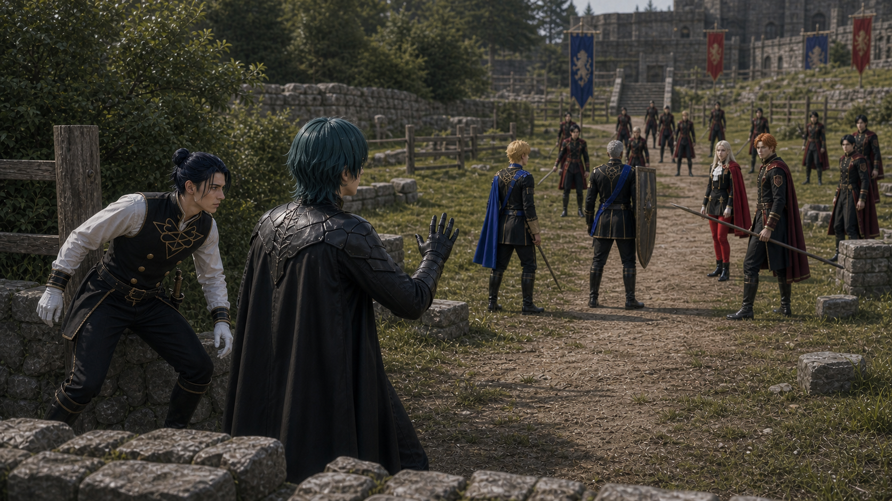
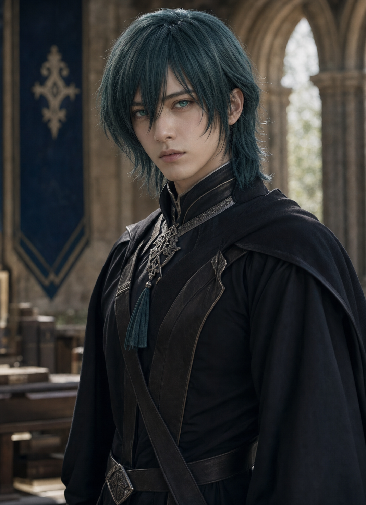
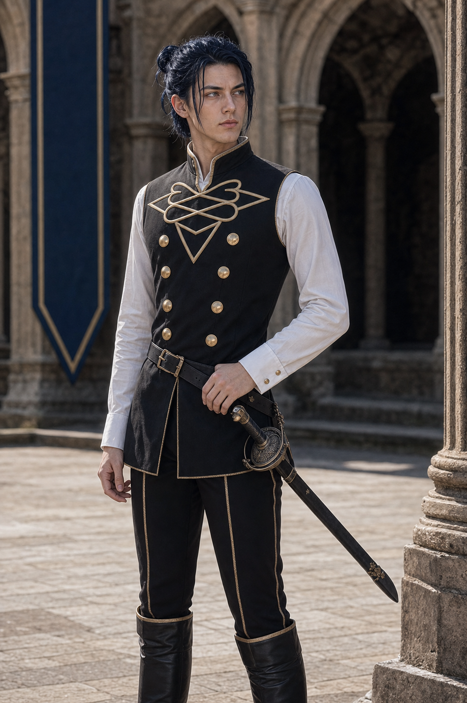
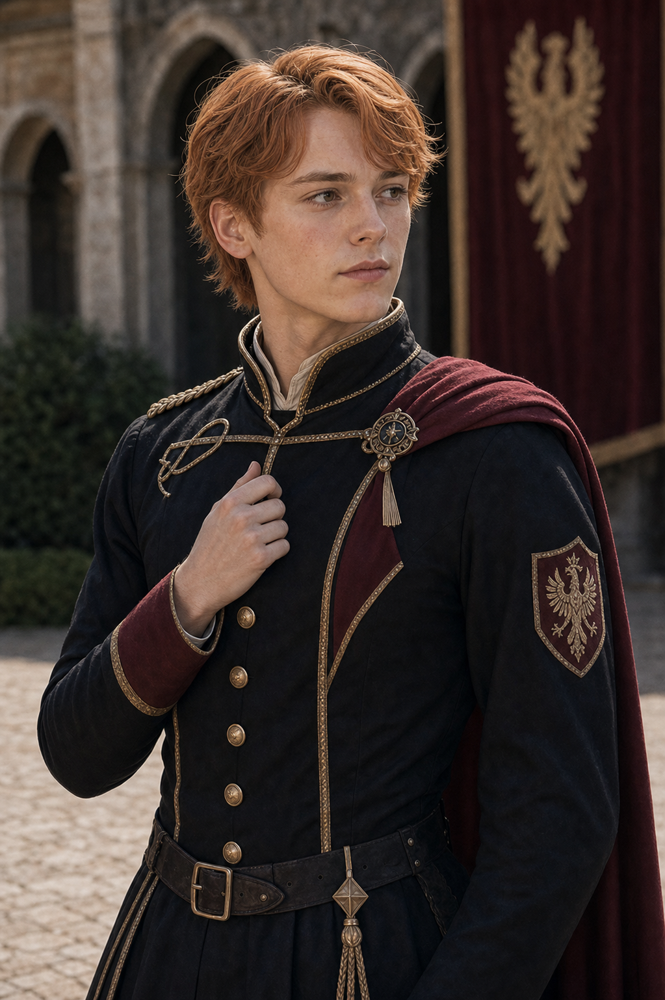

Shot028C keyframe
qa_passed / P1
episodes/EP02/generated/mock_battle_production_keyframes_2026-07-17/Shot028C_keyframe.pngFelix 侧切但不追深

qa_passed / P1
episodes/EP02/generated/mock_battle_production_keyframes_2026-07-17/Shot028C_keyframe.png
calm professor commander, continuity anchor between front and flank lines
assets/characters/protagonist/Byleth/professor/selected.png
dark-blue-haired duelist, sharp side-cut tension, restrained from overextending
assets/characters/blue_lions/Felix/academy/selected.png
orange-haired noble cavalry student, stabilizes and intercepts Felix
assets/characters/black_eagles/Ferdinand/academy/selected.pngEstablish the exact geography for Felix Side Cut Held: Felix finds side gap but stops at contact line under Byleth control.
episodes/EP02/generated/mock_battle_production_keyframes_2026-07-17/Shot028C_A_keyframe.png
Show the tactical peak with Byleth, Felix, Ferdinand using their locked character assets and academy costumes.
episodes/EP02/generated/mock_battle_production_keyframes_2026-07-17/Shot028C_B_keyframe.png
End on the reaction or reposition that motivates the next shot while preserving screen direction.
episodes/EP02/generated/mock_battle_production_keyframes_2026-07-17/Shot028C_C_keyframe.png